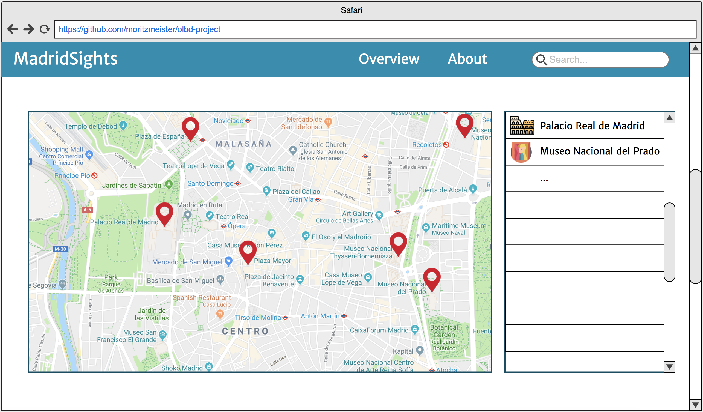
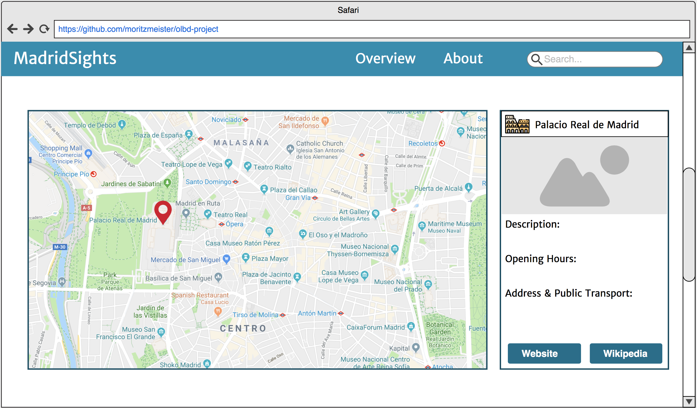

Application requirements specification
Course: Open Linked Big Data
Team members: Jacqueline Neef and Moritz Meister
Requirements:
- The web app should contain a menu bar allowing the user to switch to the overview page.
- The web app should contain a about page, to explain the purpose of the application.
- The user needs to be able to see a Google Maps style map of Madrid.
- The map should contain location tags for all in the data available points of interest in the overview page.
- Allow the user to see a list with all points of interest in the overview page.
- The list of points of interest should indicate whether it is a monument or museum.
- The user needs to be able to click a point of interest on the map or in the overview list and be redirected
to the point of interest view.
- The point of interest view (see userinterface mock-ups) needs to show a location tag on the map for the
selected point
- The point of interest view needs to show an information box showing all the available information.
- The information box needs to contain links to the wikipedia article and the website of the point of
interest, if available.
- Allow the user to search for points of interest.
Userinterface mock-ups
- Overview:
This view gives an overview over all sights in Madrid, that is Monuments and Museums. It contains a
scrollable list and a location tag for each of the points of interest on the map.

- Point of interest view:
This view is activated once a specific point of interest is chosen. The view contains an info box instead of
the scrollable list. The user can find all information available for the sight here or can click a link to
the related Wikipedia article if necessary.
